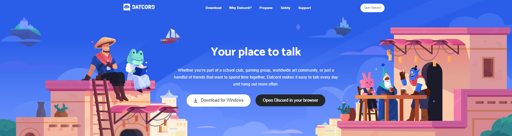

Datcord
Datcord is a full stack web application inspired by the website Discord. The website allows users to create an account and sign in. As an account holder, users can open the discord app, join/leave servers, and send and receive messages live in server channels. If a user is the creator of a server, they can edit the server name, add/remove/edit channels, and delete the server. If a user does not want to sign up for an account, they can use the demo login and explore the datcord app.
This site was built on a Ruby on Rails framework for the backend with active record to avoid N+1 queries. PostgreSQL was used as the database to store the data. React and Redux were utilized to create a dynamic, single-page web app allowing users to smoothly navigate through the site. On the landing page, css animations are used to create a moving background. On the login/signup page, javascript canvas is used to render a bezier curve circle.
Click here to see the live site!